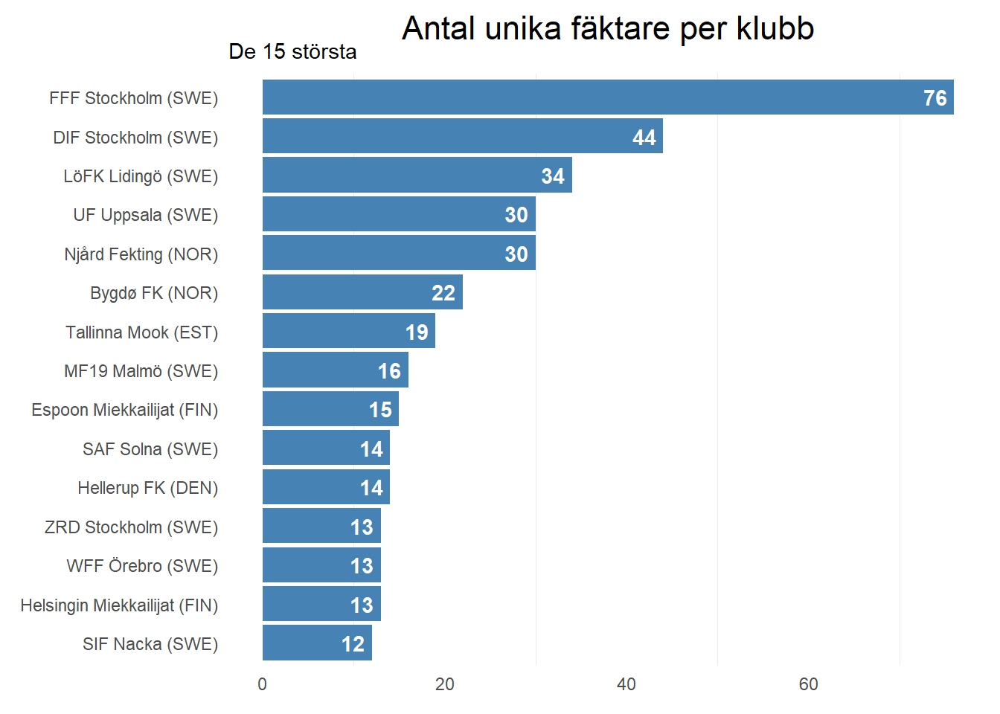

Sedan tidigare vet vi ju att det totalt 1941 starter i de tävlingar, de representerar 87 olika klubbar, låt oss gräva vidare, tävlar alla lika mycket? Vi börjar att kolla på de klubbar som har flest starter.
Ser man på! Hela 4 klubbar med över hundra startande fäktare, men en stark dominans av Stockholmsklubbar, endast Uppsala kan ta upp kampen. Som FFFare kan man inte annat än bli stolt, för att komma upp i motsvarande siffror behöver man lägga ihop de, i storleksordning efter FFF, 3 största klubbarna för att komma jämsides. FFF är den överlägset mest aktiva klubben i tävlingshänseende. Faktum är att drygt var var 5:e startande är kommer från FFF.
Intessant också att se att det är den norska klubben Njård som ligger närmast under 100-klubben trots att de flesta tävlingarna har gått i Sverige. I dataunderlaget är det endast NM, Åbo och Oslo Cup som gått utanför den Svenska gränsen.
Vi har ju sett att några fäktare tävlar väldigt flitigt. Låt oss därför titta på hur många unika fäktare som respektive klubb ställer upp med. Som vi nämnt ovan är de totalt 87 olika klubbar så vi gör ett urval bestående av de 15 största klubbarna, sett till antal unika fäktare.

Återigen är FFF störst, men inte lika vansinnigt dominanta som i fråga om antal starter, dvs FFF är inte bara störst utan står ocså för överlägset flitigaste tävlandet Sverige.
Resultat
Nu när vi vet vilka klubbar som är stora, i fråga om antal starter, så kan gå vidare och granska hur väl fäktarna från de olika klubbarna klarar sig. I tidigare inlägg har vi redan sett vilka fäktare som plaserar sig bra, men nu gör vi en uppdelning per klubb.
Vi börjar med att spana in vilka klubbar som segrarna representerade, vi avgränsar sökningen till de 10 bästa.
Intressant att notera att Wadköping, med sina relativt få fäktare, placerar sig på en andraplats, mycket imponerande! Men, det går inte att bludna för den stora ojämlikheten till FFFs fördel. Faktum är att om man summerar de övriga svenska klubbarna i listan ovan får de tillsammans ihop nästan lika många segrar som FFF.
Liksom tidigare bör vi också kolla på pallplatser för att få en mer nyanserad bild.
Nu får klubbarnas storlek ett större genomslag, men Wadköping fortsätter att sticka ut som. Återigen är FFF i en egen klass.
Vilka tävlingar åker klubbarna på?
En sak till vore kul att kolla på och det är hur tävlingsdeltagandet för enskilda tävlingar, uppdelat per klubb, dvs på vilka tävlingar kan vi se många fäktare från samma klubb. Vi har tidigare konstaterat att de flesta tävlingar som drar många deltagare ligger utanför Stockholm och det kan vara kul att se hur mycket olika klubbar reser.
| Antal deltagare per klubb i olika tävlingar | ||
|---|---|---|
| Urval: minst 18 fäktare per klubb | ||
| Tävling | Klubb | Antal startande |
| Örebro Masters | FFF Stockholm (SWE) | 43 |
| Uppsala Cup | FFF Stockholm (SWE) | 42 |
| Svenska mästerskapen ungd kad | FFF Stockholm (SWE) | 36 |
| 2023 S:t Erikscupen (5) | FFF Stockholm (SWE) | 30 |
| 2023 S:t Erikscupen (4) | FFF Stockholm (SWE) | 29 |
| Challenge Eugène Fillol | FFF Stockholm (SWE) | 26 |
| 2023 S:t Erikscupen (6) | FFF Stockholm (SWE) | 24 |
| 2023 S:t Erikscupen (1) | FFF Stockholm (SWE) | 23 |
| Malmö Open | FFF Stockholm (SWE) | 23 |
| Challenge Bernadotte | FFF Stockholm (SWE) | 22 |
| Kungsbacka Masters | FFF Stockholm (SWE) | 22 |
| Nordic Championships | Tallinna Mook (EST) | 21 |
| 2023 S:t Erikscupen (2) | FFF Stockholm (SWE) | 20 |
| Svenska mästerskapen ungd kad | LöFK Lidingö (SWE) | 20 |
| Uppsala Cup | UF Uppsala (SWE) | 18 |
Inte överraskande kanske att den största klubben också har störst trupper på tävingar, men att det bara finns 3 klubbar som har kunnat mönstra 18 eller fler deltagare i en enskild tävling är oroande. I Uppsala Cup deltog mer än dubbelt så många FFFare som Uppsalafäktare.
Fundering
Med god inblick i FFF kan man konstatera att den omställning som gjordes för några år sedan som innebar en kraftig satsning på en ambitios ungdomsverksamhet med den högsta träningskvalitet som vi kan åstadkomma har lagt grunden till de resultat som siffrorna ovan visar.
Att som FFFare se att min klubb både är störst och bäst kanske skulle vara endast glädjande, men dessvärre väcker detta också andra frågor och en hel del oro. Hur kan övriga fäktsverige bli bättre? Förvisso är FFFarna, iallafall i de yngre åldersklasseran, sannolikt internationellt konkurrenskraftiga, men att på seniorsidan är så inte fallet. Vi vill självklart vara bäst, men det måste finnas en sund och positiv konkurrens.
I Stockholm finns ett bra samarbete mellan klubbar som gör att samträningar är vanliga, vilket är positivt och måste fortsätta att uppmuntras. Jag vet också att FFFs tränare aktivt arbetar för att hjälpa fäktare från andra klubbar, med exempelvis veckovisa livestreamade träningar, där Kungsbackas fäktare kan träna på samma sätt som vi, detta har pågått i mer än ett år.
Men, mer måste göras för att alla ska bli bättre och detta måste ske baserat glädje, trygghet och gemenskap (vilket råkar vara FFFs värdeord).